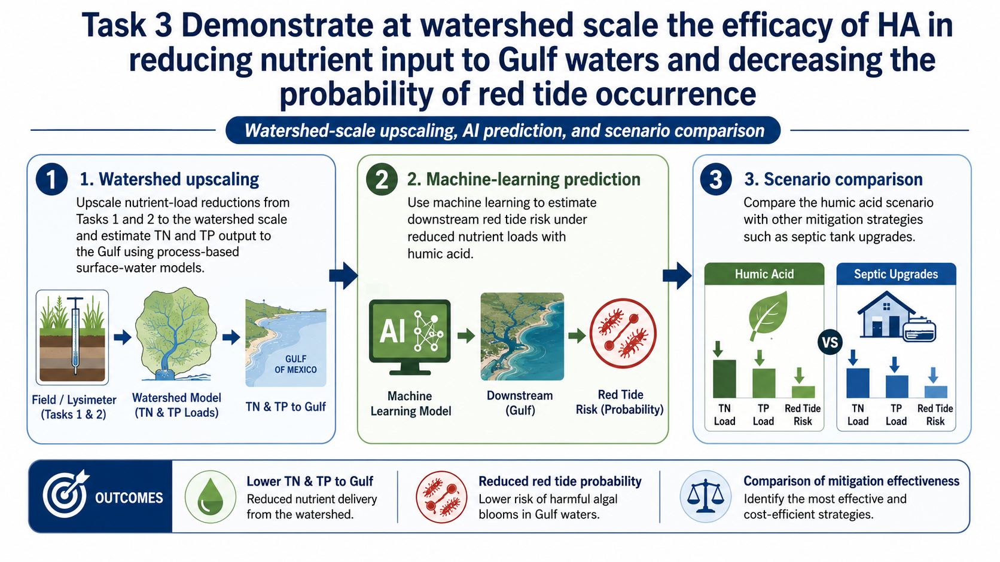

Task 3 — Watershed, Red Tide & Decision Support
Objective
Translate field-verified nutrient reductions into watershed and coastal-management implications by combining process-based watershed modeling, machine learning, and an interactive stakeholder decision-support system.

Watershed nutrient-load modeling
Use the existing Peace River Watershed Assessment Model (WAM) to compare baseline conditions with humic-acid adoption scenarios using qualified results from Tasks 1 and 2.
Machine-learning red-tide assessment
Use nutrient-load scenario outputs with the existing Karenia brevis model to estimate scenario-based changes in bloom probability, frequency, and severity.
LLM-powered decision support
Integrate project data, model outputs, Earth-observation products, and economic information into source-supported natural-language guidance for stakeholders.
Task 3a — Watershed upscaling
The primary scenario design compares a baseline scenario representing current land use and standard agricultural practice with a humic-acid adoption scenario in which agricultural parameters are updated using accepted treatment effects measured in Tasks 1 and 2. Sensitivity and uncertainty analyses will document how assumptions about treatment effect, adoption, hydrology, and management influence estimated TN and TP load reductions.
Task 3b — Red-tide response
The project team has an existing machine-learning classifier for Karenia brevis conditions in Charlotte Harbor. Task 3b will use accepted watershed-model outputs and the environmental variables required by the existing model to compare predicted bloom behavior across nutrient-management scenarios. Model performance, uncertainty, and domain limitations will be documented with the scenario results.
Task 3c — Stakeholder dashboard
The decision-support concept is designed to move beyond static reports. Farmers, extension personnel, and watershed managers will be able to query qualified project information in natural language and receive source-supported summaries, tables, and maps. The prototype page below is intentionally a shell, ready to be connected to project data later.
Scenario comparison framework
Beyond baseline versus HA adoption, the project planning presentation identifies broader management comparisons (for example, alternative nutrient-mitigation strategies) as a management question. Those comparisons should only be added to the public results page after the scenario definitions and cost basis are finalized.